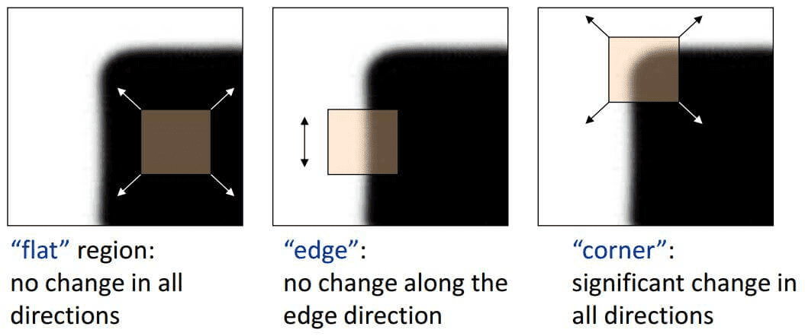
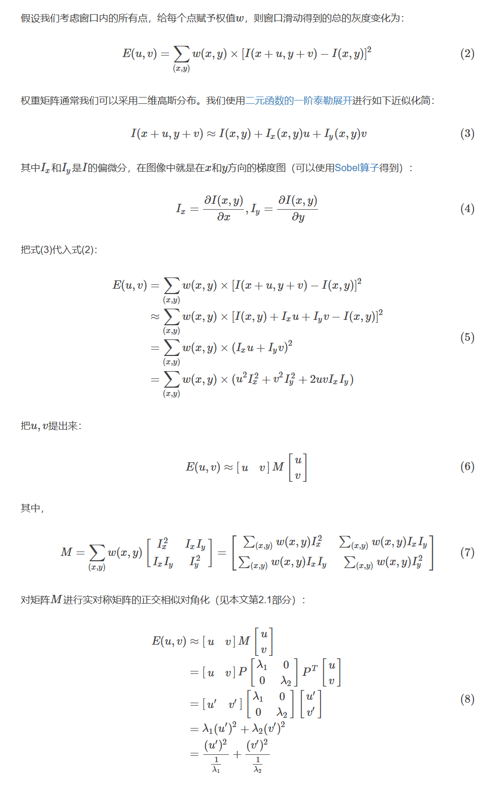
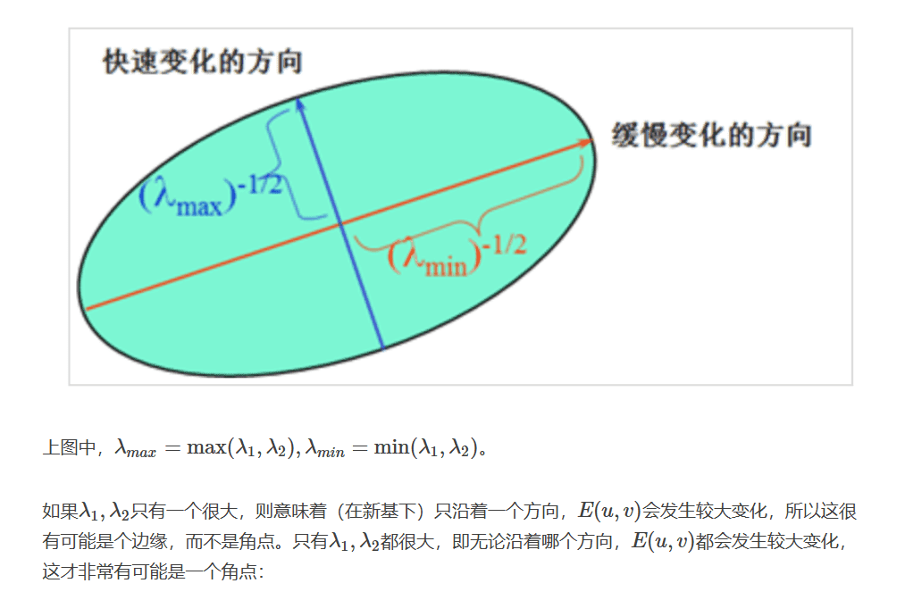
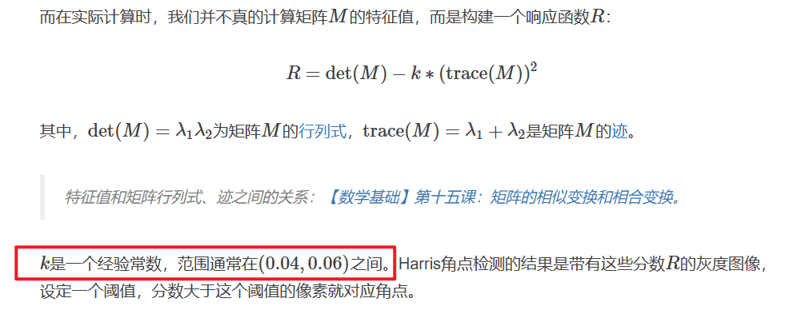

更详细的角点函数
来自本人笔记: https://github.com/masterAllen/LearnOpenCV/blob/main/docs/2.2.md
建议看这个博主的博客，慢下来从原理开始看，收获太大了！！
基本原理说明
知道这章的几个函数，需要了解一些角点的原理。主要是:
- 角点检测和矩阵的特征值 \(\lambda\) 怎么扯起来的？
- 矩阵的特征值大小和角点检测准确度的联系
- 函数中有一个参数 k 代表什么含义
这个博主的博客 讲的相当好，接下来相当于是复制粘贴了。
问题一

什么是角点：如果在任何方向上滑动窗口，窗口内的灰度都会发生变化，则这是一个角点。窗口滑动的灰度变化可以表示为：

这样角点检测就和某个矩阵的特征值相关联起来了。
问题二

问题三

具体函数
理解上面的原理就清楚了，下面主要分成两类，一个是 Harris，一个 Shi-Tomasi；后者其实主要区别就是直接用较小的特征值，这样不用调整上面 k 值。
cornerHarris
void cornerHarris(
InputArray src, OutputArray dst,
int blockSize, int ksize, double k,
int borderType = BORDER_DEFAULT
);
blockSize 是滑动窗口大小；ksize 是计算梯度的Sobel算子尺寸；k 就是上面问题三的那个值
注意这个函数是放回图像各个位置的 R 值，所以之后还是要通过类似 R[R > 0.01*R.max()] 挑选出符合条件的点。
goodFeaturesToTrack
void goodFeaturesToTrack(
InputArray image, OutputArray corners,
int maxCorners, double qualityLevel, double minDistance,
InputArray mask = noArray(),
int blockSize = 3,
bool useHarrisDetector = false,
double k = 0.04
);
// 官方文档中的示例
goodFeaturesToTrack(gray,25,0.01,10)
- maxCorners: 最多返回角点个数。会挑选前 maxCorners 个最优的角点返回。为 0 表示没有返回数量限制
- qualityLevel: 举例而言，最优（即 R 值最大）角点的 R 值为 1500，如果qualityLevel=0.01，则R值小于1500×0.01=15 的角点都会被抛弃。
- minDistance: 返回的角点中，之间最小的欧氏距离
- blocksize, k: 同 Harris
- userHarrisDetector: True 使用 Harris 方法；False 使用 Shi-Tomasi 方法
cornerEigenValsAndVecs
这个函数是输入图片，然后计算基本原理所说的两个特征值。这就是为什么要理解原理，不然不知道这函数干什么。
void cornerEigenValsAndVecs(
InputArray src, OutputArray dst,
int blockSize, int ksize, int borderType = BORDER_DEFAULT
);
参数同上面的函数，下面是一个示例：
int main(int argc, char** argv) {
img = imread("xxx");
// 参数
int blockSize = 3;
int ksize = 3;
double k = 0.04;
// 计算特征值
img_lambdas = Mat::zeros(src.size(), CV_32FC(6));
cornerEigenValsAndVecs(img, img_lambdas, blockSize, ksize, 4);
// 计算响应，img_lambdas 就是算出的两个特征值
R = Mat::zeros(src.size(), CV_32FC1);
for (int row = 0; row < img_lambdas.rows; row++) {
for (int col = 0; col < img_lambdas.cols; col++) {
double lambda1 = img_lambdas.at<Vec6f>(row, col)[0];
double lambda2 = img_lambdas.at<Vec6f>(row, col)[1];
R.at<float>(row, col) = lambda1*lambda2 - k*pow((lambda1 + lambda2), 2);
}
}
// 挑选出合适的点，模仿 goodFeaturesToTrack 的条件
int maxCorners = 20;
double qualityLevel = 0.01;
double minDisatnce = 10;
double minR, maxR;
minMaxLoc(R, &minR, &maxR, 0, 0, Mat());
float threshold = minR + qualityLevel*(maxR - minR);
for (int row = 0; row < src.rows; row++) {
for (int col = 0; col < src.cols; col++) {
float v = harrisRspImg.at<float>(row, col);
if (R.at<float>(row, col) > threshold) {
// OK!
if (maxCorners < 0) { return 0; }
maxCorners -= 1;
}
}
}
return 0;
}
cornerMinEigenVal
同上面的函数，不过计算的是较小特征值（因为只求较小值可能求解速度会快一点），即给 Shi-Tomasi 这种方法用的，参数也同上面的函数。
cornerSubPix
亚像素级别的检测，具体参考上面博主的文章，非常详细。